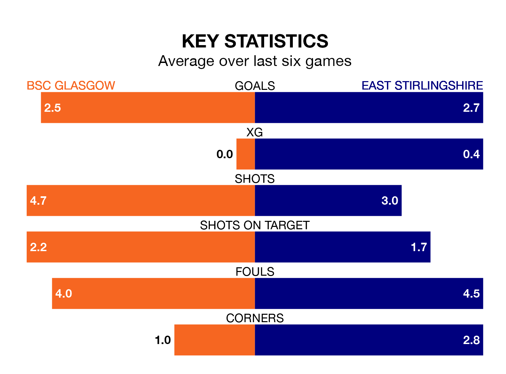

Struggling East Stirlingshire face BSC Glasgow away at the moreroom.com Stadium on Saturday looking to build on a win in their last league outing.
After securing all three points with a 6-4 victory over Celtic B on April 13, the Shire sit 15th in the Lowland Football League.
They travel to play a BSC Glasgow side 14th in the standings, who were held in their last match, 1-1 against Bo'ness United, on Tuesday.
In the last 10 years, BSC Glasgow and East Stirlingshire have played each other on 13 occasions. BSC Glasgow won five of them, East Stirlingshire seven, and they drew once.
On average, BSC Glasgow scored 1.2 goals and the Shire 1.6 in those matches.
Their last meeting was on October 21, when BSC Glasgow won 4-3 away.
With 53 goals in 33 games so far this season, BSC Glasgow are scoring at below the league average rate with 1.6 goals per game. And they are conceding at an average rate, letting in 57 goals at a rate of 1.7 per game.
East Stirlingshire, meanwhile, are average scorers, with 1.7 goals per game. They have conceded 2.0 goals per game.
The hosts are in mixed form in the Lowland Football League, with three wins and a draw from their last six games.
With four wins and two losses over that period, the Shire's form is slightly better – they have taken 12 points from 18, compared to BSC Glasgow's 10.
Updated: 15:40 (UTC), 18/04/24